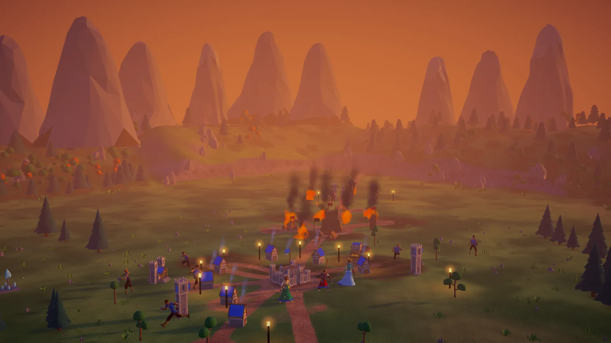
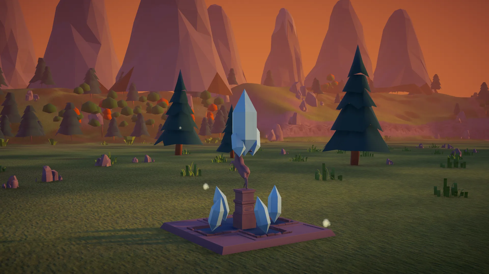
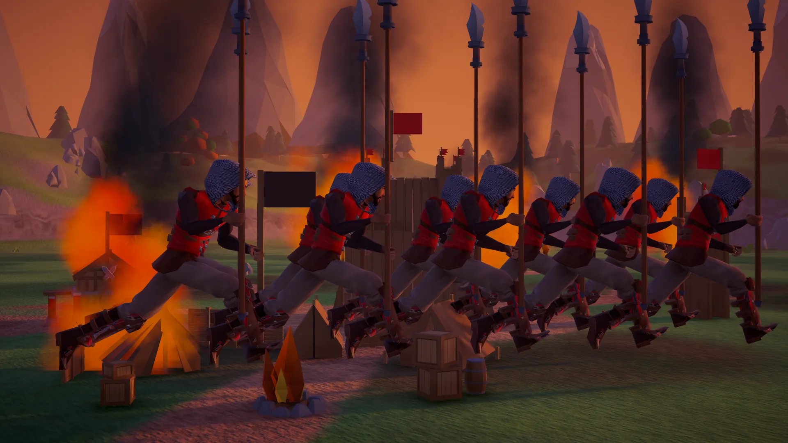
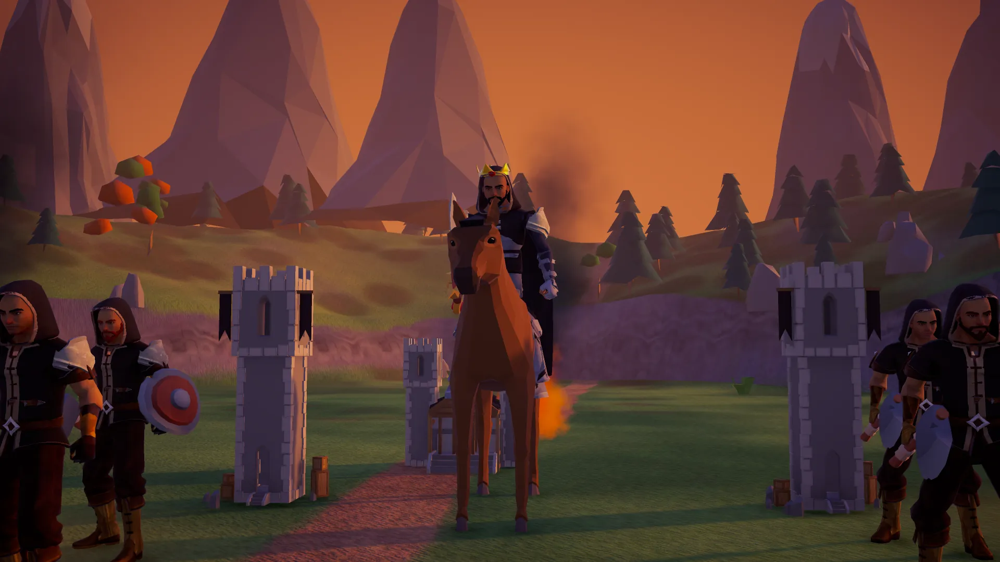

La storia

La corona di Eldoria è caduta.
Ogni regno che si inchinava a lei ha preso la sua strada.

Ora i suoi regni si contendono i Pozzi d'Etere.
Il loro etere compra armi e protezioni che nessun oro può comprare.

A est bruciano fuochi.
L'esercito rosso è in marcia.

Più in là, il Signore dei Banditi attende nella sua fortezza.
Qualcuno deve partire e affrontarlo.